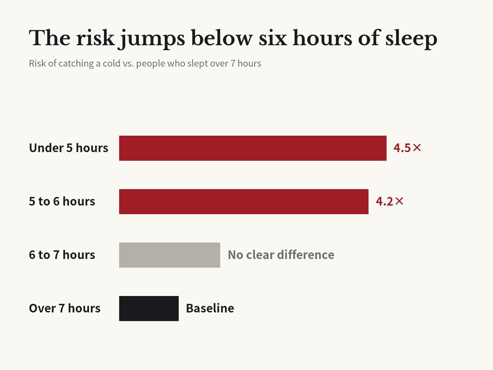

People who slept under 6 hours were 4.2 times more likely to catch a cold
Prather, Janicki-Deverts, Hall & Cohen · Sleep, 2015

01The result
You have probably heard that short sleep makes you catch colds. Researchers led by a team at the University of California, San Francisco put that idea to a real test and published the results in the journal Sleep in 2015. They dropped a cold virus into the noses of 164 healthy adults and watched who got sick.
The answer was clear. People who slept less than six hours a night were 4.2 times more likely to catch a cold than people who slept more than seven. For those under five hours, it was 4.5 times.
People who slept between six and seven hours were not clearly different from the seven-plus group. The risk jumps when sleep drops below six hours.

02How they tested it
First, each person wore a watch-like sensor on the wrist for a week of normal life. It used body movement to measure how long they really slept. That is more accurate than asking people to write down their own sleep.
Then everyone checked into a hotel, so no one could pick up a different cold outside. After a first round of tests, doctors put drops with a cold virus into their noses.
For the next five days, doctors collected nasal samples every day to see if the virus took hold. They also measured signs they could see, such as how much mucus people produced. Only people who were infected and showed real symptoms counted as having a cold.
48 of the 164 people caught a cold.
03Could it be something else?
People who sleep less may also be more stressed, smoke, or have less money. Any of those could be the real cause.
So the researchers also looked at age, sex, race, education, income, weight, season, stress, mood, and habits like smoking and drinking. They even checked how many antibodies to this virus people had before the test.
Even with all of that taken into account, sleep still stood out. It was the strongest factor of all.
One more surprise: waking up often during the night did not matter. What mattered was the total hours of sleep.
04Why it happens
This paper did not directly measure how sleep affects the immune system. But many other studies show that too little sleep weakens the body's defense against germs. The researchers say their result points the same way.
The same team had run a similar test a few years earlier, using sleep diaries that people filled in themselves. Short sleepers caught more colds then, too. This time, sensor data backed up the same conclusion.
05What the earlier study found
The earlier study was published in Archives of Internal Medicine in 2009. 153 healthy adults, average age 37, kept a diary for two weeks of how long they slept and how much of their time in bed they actually spent asleep. Then, in quarantine, they received cold virus drops in the nose.
People who slept less than 7 hours were 2.94 times more likely to catch a cold than those who slept 8 hours or more.
Sleep quality made an even bigger difference. People who were asleep for less than 92% of their time in bed were 5.5 times more likely to get sick than those asleep for 98% or more. That differs from the 2015 study, where waking at night did not matter. The two studies measured sleep quality differently, so its role needs more study.
06What it means
US sleep experts recommend that adults sleep at least seven hours a night. This result fits that advice.
The study looked at a normal week, not a single night. One late night is nothing to worry about. A habit of short sleep, night after night, is the problem.
In cold season, sleep deserves as much attention as washing your hands. That late-night scroll may cost more than you think.
07Limitations
Nobody was told to sleep less. The study measured normal sleep, so it cannot prove that sleep alone caused the colds. The authors say this in the paper.
More than 200 viruses cause colds, and this study used just one. Other colds and the flu still need to be tested.
4.2 times means a higher chance, not a sure thing. Not everyone who slept under six hours got sick.
Corrections
- The Korean headline said people sleeping under seven hours were 4.2 times as likely to catch a cold. The 4.2 figure compares under six hours with over seven; we corrected the Korean headline. The English headline was already accurate.
Original paper
- Prather, Janicki-Deverts, Hall & Cohen (2015), Sleep 38(9), doi:10.5665/sleep.4968
- doi.org/10.5665/sleep.4968